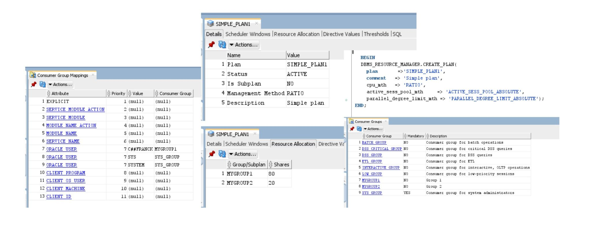

This was first published on https://www.dbi-services.com/blog/oracle-testing-resource-manager-plans/ (2021-03-16)
Republishing here for new followers. The content is related to the versions available at the publication date.
.
I never remember that in order to use instance caging you need to set a Resource Manager Plan but don’t need to set CPU_COUNT explicitly (was it the case in previous versions?). Here is how to test it quickly in a lab.
SQL> startup force
ORACLE instance started.
SQL> show spparameter resource_manager_plan
SID NAME TYPE VALUE
-------- ----------------------------- ----------- ----------------------------
* resource_manager_plan string
SQL> show spparameter cpu_count
SID NAME TYPE VALUE
-------- ----------------------------- ----------- ----------------------------
* cpu_count integer
SQL> show parameter resource_manager_plan
NAME TYPE VALUE
------------------------------------ ----------- ------------------------------
resource_manager_plan string
SQL> show parameter cpu_count
NAME TYPE VALUE
------------------------------------ ----------- ------------------------------
cpu_count integer 16
I have a VM with 16 CPU threads, no “cpu_count” or “resource_manager_plan” are set in SPFILE. I restarted the instance (it is a lab) to be sure that nothing is set on scope=memory.
sqlplus / as sysdba @ tmp.sql /dev/null
for i in {1..16} ; do echo "exec loop null; end loop;" | sqlplus -s "c##franck/c##franck" & done >/dev/null
sleep 10
( cd /tmp && git clone https://github.com/tanelpoder/tpt-oracle.git )
sqlplus / as sysdba @ /tmp/tpt-oracle/snapper ash=event+username 30 1 all < /dev/null
pkill -f oracleCDB1AI run 32 sessions working in memory (simple PL/SQL loops) and look at the sessions with Tanel Poder’s snapper in order to show whether I am ON CPU or in Resource Manager wait. And then kill my sessions in a very hugly fashion (this is a lab)
-- Session Snapper v4.31 - by Tanel Poder ( http://blog.tanelpoder.com/snapper ) - Enjoy the Most Advanced Oracle Troubleshooting Script on the Planet! :)
-------------------------------------------------------------------------------
ActSes %Thread | EVENT | USERNAME
-------------------------------------------------------------------------------
16.00 (1600%) | ON CPU | C##FRANCK
16.00 (1600%) | ON CPU | SYS
-- End of ASH snap 1, end=2021-03-16 17:38:43, seconds=30, samples_taken=96, AAS=32On my CPU_COUNT=16 (default but not set) instance, I have 32 sessions ON CPU -> no instance caging
SQL> alter system set cpu_count=16 scope=memory;
System altered.
I have set CPU_COUNT explicitely to 16 (just checking because this is where I always have a doubt)
-- Session Snapper v4.31 - by Tanel Poder ( http://blog.tanelpoder.com/snapper ) - Enjoy the Most Advanced Oracle Troubleshooting Script on the Planet! :)
-------------------------------------------------------------------------------
ActSes %Thread | EVENT | USERNAME
-------------------------------------------------------------------------------
16.00 (1600%) | ON CPU | C##FRANCK
16.00 (1600%) | ON CPU | SYS
.03 (3%) | ON CPU |
-- End of ASH snap 1, end=2021-03-16 18:03:50, seconds=5, samples_taken=37, AAS=32
Setting CPU_COUNT manually doesn’t change anything here.
SQL> startup force
ORACLE instance started.
For the next test I reset to the default to show that CPU_COUNT doesn’t have to be set explicitely in order to enable instance caging.
SQL> alter system set resource_manager_plan=DEFAULT_CDB_PLAN scope=memory;
System altered.
I have set the default resource manager plan (I’m in multitenant and running from the CDB)
-- Session Snapper v4.31 - by Tanel Poder ( http://blog.tanelpoder.com/snapper ) - Enjoy the Most Advanced Oracle Troubleshooting Script on the Planet! :)
-------------------------------------------------------------------------------
ActSes %Thread | EVENT | USERNAME
-------------------------------------------------------------------------------
13.07 (1307%) | ON CPU | SYS
12.20 (1220%) | resmgr:cpu quantum | C##FRANCK
3.80 (380%) | ON CPU | C##FRANCK
2.93 (293%) | resmgr:cpu quantum | SYS
-- End of ASH snap 1, end=2021-03-16 18:21:24, seconds=30, samples_taken=94, AAS=32
Here only 16 sessions on average are ON CPU and the others are scheduled out by Resource Manager. Note that there’s a higher priority for SYS than for my user.
SQL> alter system set resource_manager_plan=DEFAULT_MAINTENANCE_PLAN scope=memory;
System altered.
I have set the default resource manager plan (I’m in multitenant and running from the CDB)
-- Session Snapper v4.31 - by Tanel Poder ( http://blog.tanelpoder.com/snapper ) - Enjoy the Most Advanced Oracle Troubleshooting Script on the Planet! :)
-------------------------------------------------------------------------------
ActSes %Thread | EVENT | USERNAME
-------------------------------------------------------------------------------
13.22 (1322%) | ON CPU | SYS
12.31 (1231%) | resmgr:cpu quantum | C##FRANCK
3.69 (369%) | ON CPU | C##FRANCK
2.78 (278%) | resmgr:cpu quantum | SYS
.07 (7%) | ON CPU |
.04 (4%) | resmgr:cpu quantum |
-- End of ASH snap 1, end=2021-03-16 18:29:31, seconds=30, samples_taken=95, AAS=32.1
Here only 16 sessions on average are ON CPU and the others are scheduled out by Resource Manager. Again, there’s a higher priority for SYS than for my user.
for i in {1..16} ; do echo "exec loop null; end loop;" | ORACLE_PDB_SID=PDB1 sqlplus -s / as sysdba & done >/dev/null
for i in {1..16} ; do echo "exec loop null; end loop;" | sqlplus -s "c##franck/c##franck"@//localhost/PDB1 & done >/dev/null
I’ve changed my connections to connect to the PDB
-- Session Snapper v4.31 - by Tanel Poder ( http://blog.tanelpoder.com/snapper ) - Enjoy the Most Advanced Oracle Troubleshooting Script on the Planet! :)
----------------------------------------------------------------------------------------
ActSes %Thread | EVENT | USERNAME | CON_ID
----------------------------------------------------------------------------------------
14.95 (1495%) | ON CPU | SYS | 3
14.27 (1427%) | resmgr:cpu quantum | C##FRANCK | 3
1.73 (173%) | ON CPU | C##FRANCK | 3
1.05 (105%) | resmgr:cpu quantum | SYS | 3
.01 (1%) | LGWR all worker groups | | 0
.01 (1%) | ON CPU | | 0
-- End of ASH snap 1, end=2021-03-16 19:14:52, seconds=30, samples_taken=93, AAS=32
I check the CON_ID to verify that I run in the PDB and here, with the CDB resource manager plan DEFAULT_MAINTENANCE_PLAN the SYS_GROUP (SYSDBA and SYSTEM) can take 90% of CPU. It is the same with DEFAULT_CDB_PLAN.
SQL> alter session set container=PDB1;
Session altered.
SQL> BEGIN
2 DBMS_RESOURCE_MANAGER.CREATE_SIMPLE_PLAN(SIMPLE_PLAN => 'SIMPLE_PLAN1',
3 CONSUMER_GROUP1 => 'MYGROUP1', GROUP1_PERCENT => 80,
4 CONSUMER_GROUP2 => 'MYGROUP2', GROUP2_PERCENT => 20);
5 END;
6 /
PL/SQL procedure successfully completed.
SQL> alter system set resource_manager_plan=SIMPLE_PLAN1 scope=memory;
System altered.
This is the simple plan example from the documentation (or here).
-- Session Snapper v4.31 - by Tanel Poder ( http://blog.tanelpoder.com/snapper ) - Enjoy the Most Advanced Oracle Troubleshooting Script on the Planet! :)
----------------------------------------------------------------------------------------
ActSes %Thread | EVENT | USERNAME | CON_ID
----------------------------------------------------------------------------------------
8.59 (859%) | ON CPU | SYS | 3
8.51 (851%) | ON CPU | C##FRANCK | 3
7.49 (749%) | resmgr:cpu quantum | C##FRANCK | 3
7.41 (741%) | resmgr:cpu quantum | SYS | 3
.04 (4%) | ON CPU | | 0
-- End of ASH snap 1, end=2021-03-16 19:29:54, seconds=30, samples_taken=92, AAS=32
Now, with this simple plan, everything changed. The level 1 gives 100% to SYS_GROUP but it actually got 50%. Level 2 gives 80% and 20% to groups that are not used there. And level 3 gives 100% to OTHER_GROUPS. But those are the levels documented in pre-multitenant.
SQL> BEGIN
2 DBMS_RESOURCE_MANAGER.create_pending_area;
3 DBMS_RESOURCE_MANAGER.SET_CONSUMER_GROUP_MAPPING
4 (DBMS_RESOURCE_MANAGER.ORACLE_USER, 'C##FRANCK', 'MYGROUP2');
5 DBMS_RESOURCE_MANAGER.validate_pending_area;
6 DBMS_RESOURCE_MANAGER.submit_pending_area;
7 END;
8 /
PL/SQL procedure successfully completed.
I’ve assigned my C##FRANCK user which gets 20% at level 2
-- Session Snapper v4.31 - by Tanel Poder ( http://blog.tanelpoder.com/snapper ) - Enjoy the Most Advanced Oracle Troubleshooting Script on the Planet! :)
----------------------------------------------------------------------------------------
ActSes %Thread | EVENT | USERNAME | CON_ID
----------------------------------------------------------------------------------------
13.20 (1320%) | ON CPU | C##FRANCK | 3
12.78 (1278%) | resmgr:cpu quantum | SYS | 3
3.22 (322%) | ON CPU | SYS | 3
2.80 (280%) | resmgr:cpu quantum | C##FRANCK | 3
.02 (2%) | resmgr:cpu quantum | | 0
.01 (1%) | log file parallel write | | 0
.01 (1%) | ON CPU | | 0
-- End of ASH snap 1, end=2021-03-16 19:45:52, seconds=30, samples_taken=96, AAS=32
Now my user got 80% of the CPU resource and SYS only 20%
Surprised? In a CDB the “simple plan” is the the same as described in pre-12c documentation – there’s only one level, and 80/20 shares: 
The main message here is: test it because what you get may not be what you think… Test and keep it simple.
{kind=link}